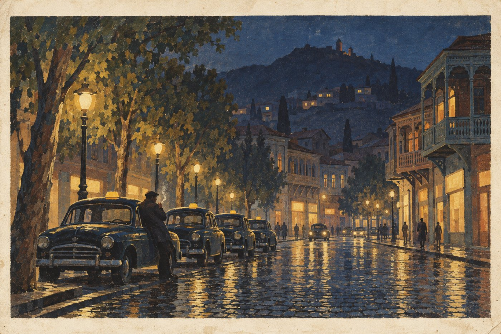

§5. Восстановление (1950-е)

После войны западные губернии лежали в развалинах. Поднять их помогли американские займы: Соединённые Штаты давали деньги и машины всем европейским странам, пострадавшим от войны, и Россия получила больше других. К 1955 году заводы работали лучше, чем до войны. Хлебные карточки отменили в 1949 году.
В пятидесятые годы в обычные дома пришли вещи, которые раньше были только у богатых: холодильник, телефон, а к концу десятилетия и телевизор. Нижегородский завод начал выпускать недорогой автомобиль «Волгарь». Сначала его покупали в рассрочку врачи и инженеры, потом и рабочие. В больших городах появились тысячи такси, которые работали днём и ночью.
Вторая республика оказалась прочнее первой. Правительства менялись реже, потому что по новой конституции премьер-министра стало труднее отправить в отставку. Женщины, которые в войну работали на заводах, теперь требовали равной платы и добились её по закону 1956 года.
Бывшие окраины империи жили своей жизнью. Финляндия и прибалтийские страны богатели быстрее России. В Грузии в 1953 году приняли закон о языке: все бумаги, вывески и уроки в школах должны были стать грузинскими. Русские, которые жили в Тбилиси поколениями или осели там в войну, вдруг почувствовали себя иностранцами. Одни выучили язык, другие уехали, третьи остались и жили своим кругом, со своими газетами, церковью и клубами.
В Туркестане всё громче звучали голоса тех, кто хотел отделиться от России.
Запомните даты. 1949 год: отмена карточек. 1953 год: грузинский закон о языке. 1956 год: закон о равной оплате труда.
Вопрос. Что чувствует человек, когда город, где он родился, становится для него заграницей?